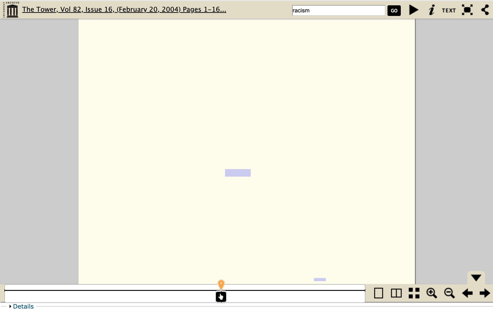
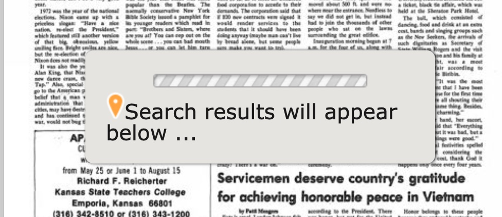

| Input |
Output |
Type |
| Use the search bar to search keyword “Watergate” |
87 search results ranked by relevance of the search term, each an individual issue of The Tower |
List with titles, icons, and text |
| Select first result: “The Tower, Vol 52, Issue 9, (November 16, 1973) Pages 1-12” |
New webpage with digital issue of “The Tower” |
Content |
| Click magnifying glass “+” icon |
Expands the size of the selected issue of The Tower in the digital reader |
Adjustment |
| Click “Download” hyperlink |
Downloads selected issue of The Tower as a PDF |
File export |
Step 2
I analyzed The Tower Archive from 1922 to 2018 from the perspective of supporting undergraduates and teachers who would like to include articles reflecting changing student perceptions of racism in their respective assignments and lesson plans. I used Nielsen's Ten Usability Heuristics to guide my analysis.
- Visibility of system status. When a user selects a specific issue, there is almost always a significant lag before the searched keyword appears in the text. Sometimes, the user receives a message reading "Search results will appear below ..." with a loading bar, reassuring them that there was not an error. However, this message appears inconsistently. Often the user is left staring at blank pages, unsure if there was an error or if they simply have to wait.
- Match between system and the real world. The majority of the menu headings and labels are easy to understand. The icons in the digital document reader, such as the magnifying glasses, are successful at communicating their purpose in a clear, simple way. However, the "filter" menu on the left side of the page is both confusing and redundant. It purports allowing a user to filter by Object Type, Publisher, and Type, but there is only one option under each header. The option for Object Type is "Islander Newspaper Issue Content Model," which is overly jargonistic and means nothing to the average student or teacher. The option for Type is just "text," which has the opposite issue of being too broad and is equally confusing. There is no way to identify the difference between Object Type and Type. As a result, the "Filter" menu is likely to frustrate users rather than help them.
- User control and freedom. The lack of user control and freedom is one of the system's largest issues. When searching keywords, the "This collection" drop-down menu (referring to The Tower archives) will automatically change to "All collections" for no apparent reason. This means if a user tries to make another search within The Tower archives specifically, they will suddenly find themselves unable. The only way to go back is by using a browser's backspace: there is no built-in feature in the system. Even worse, once the drop-down menu switches to "All collections," the "This collection" selection is no longer a drop-down menu option at all. This could easily be fixed by adding The Tower archives to the drop-down menu as its own entity.
- Consistency and standards. The system's search bar is easy to find, and the individual issues of The Tower are well-organized and clearly described. However, there is no tutorial page for performing any type of more advanced search. If there is a way to search more than one keyword at a time, I was not able to figure it out (using Boolean operators did not work). As a result, I found myself feeling like I was using the system incorrectly. A page with instructions or tips for new users would be a helpful addition.
- Error prevention. When searching a keyword in the system, the search results produce issues of The Tower in order of "relevance." In truth, this means that they are placed in order of the number of times the aforementioned keyword is used in a particular issue. This could create errors: for example, if a frequent newspaper contributor happens to share a surname with Washington or Nixon, a user searching for information about United States presidents would end up having to comb through some irrelevant results. A more effective tagging system, a preview of an article mentioning the keyword appearing in the search results, or any incorporation of metadata into the system could effectively present users from making these errors.
- Recognition rather than recall. The system does show the user exactly where they are in the larger University Libraries Digital Collections webpage. For example, if browsing The Tower articles from 1922 to 1940, a user will see a series of breadcrumb links at the top of the page reading "Browse > Archives and Special Collections > Special Collections > The Tower > The Tower 1922-1940." This is helpful for reducing the user's memory load. Unfortunately, this feature disappears when searching keywords, making it easy for a user to get lost in the system.
- Flexibility and efficiency of use. This system is incredibly slow. When reading through multiple pages of an issue of The Tower, there is a lot of stopping and starting. Simple actions, like trying to zoom in on a page by one increment, will cause the entirety of the page to disappear for around 10 seconds. There are no shortcuts preventing this, nor are there any ways to customize the individual searching experience.
- Aesthetic and minimalist design. There is a lot of irrelevant text in this digital collection. In the search results, "Publisher" and "type" are included for every issue of The Tower, even though it is always, always the same ("The Catholic University of America" and "newspaper"). This is an unfortunate side effect of this archive being housed not in its own system, but in the larger University Libraries Digital Collections system. There is no customization for the archives of The Tower, leading to a lot of redundant and irrelevant elements (the opposite of minimalist, and certainly not aesthetically pleasing).
- Help users recognize, diagnose and recover from errors. The system offers no help to users when they make simple, easy-to-fix errors. For example, I searched for the keyword "racism" using the search bar when the dropdown menu read "This collection," thinking this meant I was searching the entirety of The Tower archives. However, I did not realize I was only searching the issues of The Tower from 1922 to 1940. The system brought me to a new page, with no record of where I was searching (the drop-down menu now read "All Collections") and gave me the message "Sorry, but your search returned no results." I had to try searching the system several more times before I realized what the issue had been.
- Help and documentation. There are no "FAQ" or "Help" pages. There is a lot of trial and error involved in figuring out how to navigate the system, which can be a frustrating experience. However, the University Libraries Digital Collections website does include a "Contact" page, with a list of email addresses and explanations of their corresponding department. This allows struggling users to potentially connect with someone who can help them fix their issues and find what they are looking for.
Step 3
There are two significant strengths of The Tower Archive from 1922 to 2018's online system. First, its in-text keyword search is both reliable and impressive given the massive scope of the collection. Second, the system's incorporation of The Internet Archive's digital PDF reader is a solid choice, despite the frequent lags. The digital reader presents the scans in high-quality and its navigating icons, such as the magnifying glasses and the fullscreen button, are simple enough for anyone to comprehend.

Unfortunately, this system's strengths are outweighed by its weaknesses. The system's most significant weakness is its apparent lack of any advanced search feature. The archive's reliable in-text keyword search should make it possible for users to, at the very least, search for more than one keyword at once. Its second most significant weakness is its very long and frequent lagging. Many of the frustrations I listed in my heuristic analysis can be explained by the fact that The Tower archives are just a small part of the much larger and complex University Libraries Digital Collections system. However, the website's extremely slow loading speeds and constant lagging do not have a similar explanation, and were frustrating for both myself and my colleague who completed the mini-usability test.

Part 1: Analyze the project using the usability framework.
Step 4
My colleague Pamela participated in the mini-usability test. She found articles related to the assigned topics, listed below.
- World War II: Vol. 18 (2), Issue 23* (December 12, 1941). In this article, students from different grades at The Catholic University of America (CUA) described their thoughts on impending conflict in the immediate wake of the United States declaring war on Japan.
- Vietnam War: Vol. 45, Issue 5 (October 27, 1967). In this article, a student criticizes their fellow CUA students for perceived indifference about the Vietnam War.
Step 5
Pamela faced many of the same issues I did attempting to navigate The Tower archives. She described enjoying the activity itself, and liked that the system allowed her to search by date. However, she had difficulty navigating the system, frequently losing her place and confused about how to get back to the same search engine she was using previously. She also expressed frustration with the system's frequent lagging and slow loading times, worried that she (and not the system) had done something wrong.
Many of the issues with The Tower Archive from 1922 to 2018 could be rectified if it was treated as its own entity, rather than haphazardly folded under the larger "Digital Collections" umbrella. A simple way to do this would be including The Tower as its own option in the search bar's drop-down menu, so users would feel certain that they are searching their intended archive. Another quick fix would be incorporating the breadcrumb links that sometimes appear at the top of the page into the keyword search results page. Both Pamela and I found ourselves most confused when attempting to search our desired keywords and finding ourselves somehow redirected. Some more exhaustive solutions would be adding metadata and an advanced search feature to the system, allowing users to make more efficient and sophisticated searches. If fixing the system's slow loading times and frequent lagging is not possible, incorporating some text advising the user to be patient would help soothe user frustration and reassure them that they are not experiencing errors.